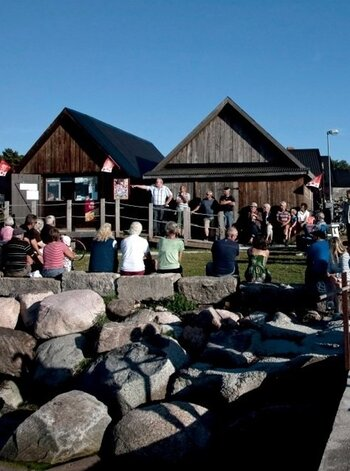

Djupviks hamn ligger på Gotlands västkust nästan rakt öster om Lilla Karlsö. Hamnen är otroligt vackert belägen i anslutning till ett gammalt Gotländskt fiskeläge bestående av fiskebodar från sent 1800-tal. Husen är grupperade i tre rader, mellan dem ligger gistgarden där man torkar nät och närmast stranden ligger båthusen. Från fiskeläget har man fri utsikt mot de båda Karlsöarna.
Ansvaret för hamnen och fiskeläget har Djupviks hamnförening, som är en ideell förening som aktivt verkar för att bibehålla och utveckla Djupvik som fiskehamn och som fritidsbåtshamn för de många närboende och sommarboende.
Föreningen driver en glasskiosk och kaffeservering på sommartid i ett gammalt båthus vid hamnen. Ett par hundra meter ovanför hamnen ligger Djupviks Hotell, ett hotell med restaurang och bra standard.
Det finns även toaletter i hamnen varav en som är tillgänglighetsanpassad för rullstolar och rollatorer.
Senaste Nytt

Foto: Björn Hjernquist.
Hamnjobb 2019-04-06
Lördagen den 16 juli arrangerade föreningen Djupviks hamn i Eksta ”Hamnens dag” i Djupvik.
Vårt arbete har med åren alltmer också inriktats på att alla besökare, även de som kommer landvägen skall trivas i det vackra hamnområdet.
Nu bjöds det in till ”Hamnens dag”. På plats fanns sjöfartsverkets SAR-helikopter, Sjöräddningens båt Hwitstjärna, släckningsbil från räddningstjänsten i Klintehamn, russ från Gannarve och ett antal loppisförsäljare.
Aktiviteten lockade ett stort antal besökare.
Succé för hamnens dag! 2018-07-16
Uppskattningsvis 1000 besökare sökte sig under dagen till Djupvik.
Intresset var stort för de besökande organisationerna som informerade och alla fick möjlighet att titta och ställa frågor.
Barnen fick rida, de bjöds på bulle och dricka och många prövade lyckan i fiskdammen. Det fanns möjlighet att handla kaffe, korv, dricka och glass.
Många dröjde sig kvar i hamnområdet och trivdes i det inledningsvis lite blåsiga men vackra vädret.